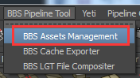
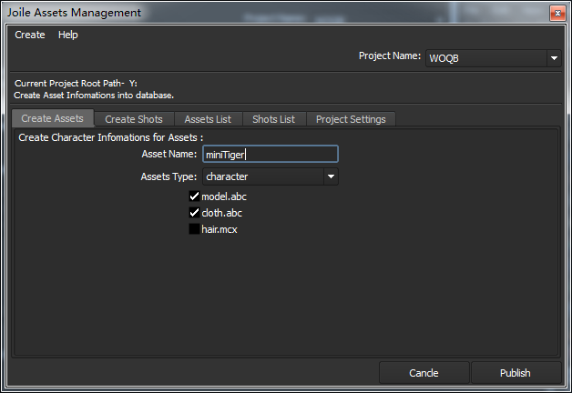
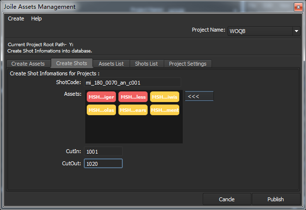

1. BBS Assets Management
该窗口用于创建项目并给项目创建资产、创建镜头、设置项目基本设置等等。

1.1.Create Assets
在Asset Name中输入角色名，选择对应的Assets Type(角色类型)，勾选当前创建的该资产的缓存组。确认无误后点击Publish提交。

1.2.Create Shots
在ShotCode中输入要创建的镜头号，点击<<<从中选择要添加到该镜头中的角色（注意：如果<<<中没有找到对应资产要在Create Assets一栏中创建资产），使用CutIn、CutOut设置当前镜头起始帧。确认无误后点击Publish提交。
